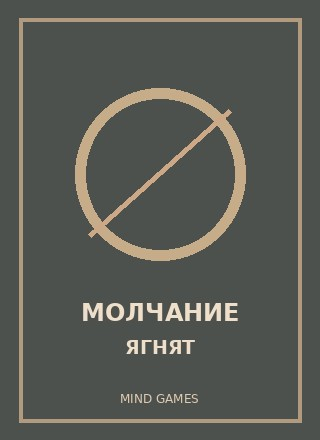
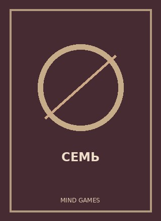
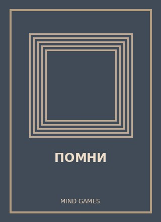
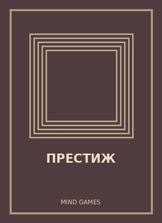
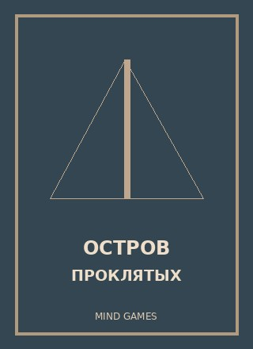

Пять психологических триллеров, которые стоит посмотреть
ОписаниеСравнительная таблицаЧто выбрать
Небольшая подборка
- Молчание ягнят (1991). Режиссёр: Джонатан Демме. Молодая сотрудница ФБР обращается к заключённому психиатру за помощью в расследовании преступлений.
- Семь (1995). Режиссёр: Дэвид Финчер. Два детектива расследуют убийства, связанные с семью смертными грехами.
- Помни (2000). Режиссёр: Кристофер Нолан. Герой пытается раскрыть преступление, несмотря на проблемы с запоминанием новых событий.
- Престиж (2006). Режиссёр: Кристофер Нолан. Два иллюзиониста превращают профессиональное соперничество в опасную борьбу.
- Остров проклятых (2010). Режиссёр: Мартин Скорсезе. Маршал прибывает на остров, чтобы расследовать исчезновение пациентки психиатрической больницы.
Сравнительная таблица
Нажмите на название фильма, чтобы открыть информацию о нём на внешнем сайте.
| Иллюстрация | Фильм | Год | Режиссёр |
|---|---|---|---|
 | Молчание ягнят | 1991 | Джонатан Демме |
 | Семь | 1995 | Дэвид Финчер |
 | Помни | 2000 | Кристофер Нолан |
 | Престиж | 2006 | Кристофер Нолан |
 | Остров проклятых | 2010 | Мартин Скорсезе |
Иллюстрации к фильмам созданы для учебного сайта, это не официальные киноафиши.
Что выбрать для просмотра?
Любителям детективов можно начать с «Семь», а тем, кому интересны сюжеты с загадками и необычной структурой повествования, - с «Помни» и «Престижа».